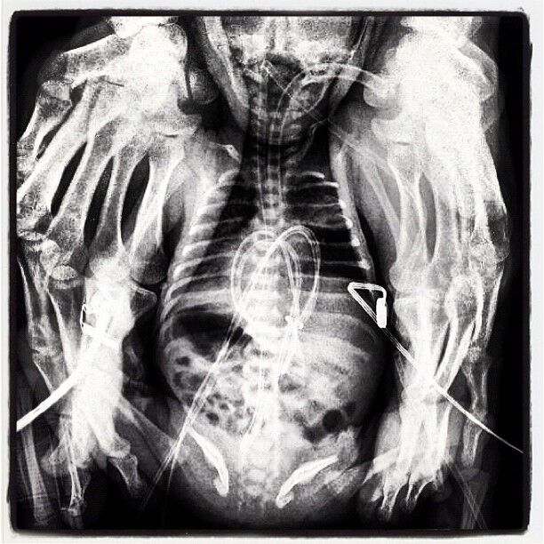

Girişimsel radyoloji; ultrason, tomografi veya anjiyografi gibi görüntüleme yöntemleri eşliğinde, ciltte küçük bir giriş yapılarak gerçekleştirilen tanı ve tedavi işlemlerini kapsayan bir tıp alanıdır. Birçok hastalıkta cerrahiye alternatif veya cerrahiyi tamamlayıcı olarak daha az ağrı, daha kısa hastanede kalış ve daha hızlı iyileşme avantajları sağlayabilir.
Görüntüleme eşliğinde, hedef lezyondan güvenli şekilde örnekleme yapılır.
Damar içinden mikrokateterlerle pıhtı/anevrizma tedavileri uygulanabilir.
Şah damarındaki darlıkların damar içinden stentleme ile tedavisi.
Periferik arter hastalığında kan akımını artırmaya yönelik endovasküler tedaviler uygulanır.
Ayak damarlarındaki tıkanıklıkların açılması, yara iyileşmesini destekleyebilir.
Rahim miyomlarını besleyen damarların embolizasyon ile kapatılması hedeflenir.
Fistül-greft darlık/tıkanıklık gibi sorunlarda anjiyografi eşliğinde balon/stent gibi tedaviler uygulanabilir.
Selçuk Üniversitesi Tıp Fakültesi'nden 2013 yılında mezun oldum. Radyoloji eğitimimi Ankara Numune Eğitim ve Araştırma Hastanesi'nde 2019 yılında tamamladım. İstanbul Zeynep Kamil Eğitim ve Araştırma Hastanesi'nde 2019-2021 yılları arasında radyoloji uzmanı olarak görev yaptım. 2021 yılından itibaren Bolu Abant İzzet Baysal Üniversitesi Tıp Fakültesi'nde girişimsel radyoloji alanında çalışmaktayım.
Girişimsel Radyoloji alanında birçok farklı işlem uygulamaktayım. Klinik pratiğimde özellikle karotis stent, akut inme ve beyin anevrizması tedavileri, periferik damar hastalıkları, diyabetik ayak yarası ve diyaliz fistülü (AVF) / diyaliz erişim yolu sorunlarının anjiyografi eşliğinde tedavilerini ön planda olmak üzere geniş çaplı Girişimsel Radyoloji tedavileri uygulamaktayım.